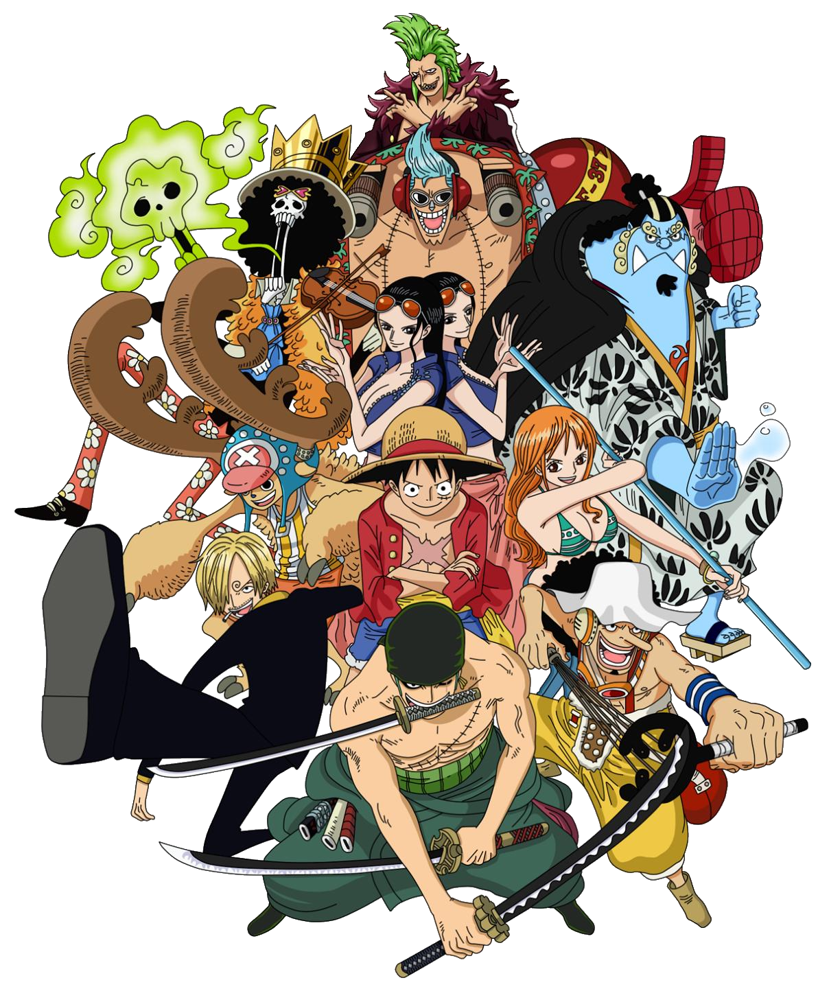

Tripulação
 - A tripulação é composta por oito humanos, um homem-peixe e um animal com intelecto humano dotado de uma Akuma no Mi; dos humanos, Sanji possui modificações sobre-humanas que lhe foram dadas ao nascer, Franky é um ciborgue e Brook possui um corpo de esqueleto depois de ser ressuscitado por um poder de Akuma no Mi.
- Monkey D. Luffy (Capitão)
- Roronoa Zoro (Espadachim)
- Nami (Navegadora)
- Usopp (Atirador)
- Vinsmoke Sanji (Cozinheiro)
- Tony Tony Chopper (Médico)
- Nico Robin (Arqueóloga)
- Franky (Carpinteiro/Construtor)